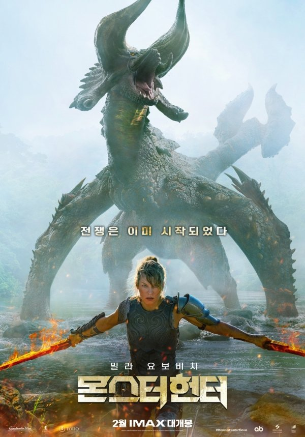

처음으로
영화:몬스터헌터(Monster Hunter)
- 공식 포스터
- 예고편
- 관련 사이트
영화 간단 소개

UN합동 보안 작전부 아르테미스 대위(밀라 요보비치)는 행방불명된 팀원들을
찾기 위해 나서지만 실종된 그들과 같은 이상 현상으로 거대 몬스터의 세계로
빠진다. 하지만 눈앞에 닥친 강력한 몬스터들의 습격으로 유일한 생존자가
된 그녀는 몬스터 헌터(토니 자)와 마주하게 되는데… 다시 인류의 세계로
돌아갈 수 있는 방법은 단 하나.몬스터와 맞서 반드시 살아남아야 한다!